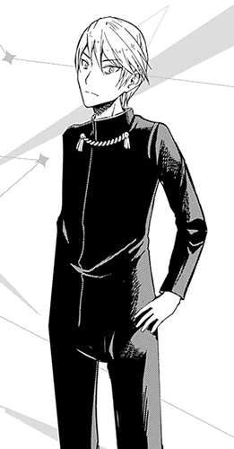

Miyuki Shirogane (白しろ銀がね 御み行ゆき, Shirogane Miyuki) deuteragonist and male protagonist of the Kaguya-sama wa Kokurasetai series. He was a third-year high school student at Shuchi'in Academy and the president of the 67th and 68th Student Council.
| Kaguya Shinomiya | |
|---|---|
| Manga | Anime |
|  | |
| Profile | |
| Age | 18 |
| Birthday | 9 September |
| Gender | Male |
| Eye Color | Dark Blue |
| Hair Color | Blond |
| Height | 175 cm |
| Personal Status | |
| Occupation | High School Student
Student Council President |
| Grade | Senior (3-A) |
| Portrayal | |
| Japanese VA | Makoto Furukawa |
| English VA | Aaron Dismuke |
| Debut | |
| Manga | Chapter 1 |
| Anime | Episode 1 |
Miyuki is based on Ootomo no Miyuki (大伴 御行), the fourth suitor from The Tale of the Bamboo Cutter, who was tasked with finding a Jewel from a Dragon's Neck.
Miyuki is a handsome young man with blonde hair, dark blue sanpaku eyes with long eyelashes. Due to his constant sleep deprivation and nearsightedness, his eyes appear to glare, and he constantly appears to look a little tired, with bags/ dark circles under his eyes.
He usually wears the regular Shuchi'in Academy black male uniform adorned with the Aiguilette, the golden chain-like accessory around his neck that is passed down by the previous generations of the Shuchi'in Academy presidents as per his authority as the student council president.
Miyuki is a diligent student who, despite his underprivileged background, climbed his way to the top of his class through hard work and determination. Miyuki holds himself in high regard, consistently working to maintain his perfect image. He is a textbook workaholic, enjoying his part-time job and often putting his own health at risk for the sake of his work, he always attempts to recruit new workers and make them join his part-time job. Due to his poor background, Miyuki doesn't mention finance much and goes to great lengths to not be wasteful, and generally dislikes expensive gifts.
Even though he holds feelings for the vice president, Kaguya Shinomiya, her wealth and talents greatly intimidate him, leaving him utterly terrified at the idea of confessing to her. He fears that any action that can be interpreted romantically will cause Kaguya to look down on him, saying his trigger phrase "O-kawaii-koto", or "How Cute". This is true even after beginning to date her. He also maintains the illusion of a perfect person at all times, in order to impress Kaguya and project a proper image befitting the SC President of Shuchi'in High. He hates the thought of Kaguya finding out his less desirable traits, and hides them away. Another reason he studies so hard is that people are forced to listen to an "impure" student when he achieves top grade in his age group, and he believes that if he were to fall under Kaguya in the assessment it would make her leave him behind, deeming a potential relationship with her impossible and alien.
Miyuki has never had a girlfriend before Kaguya and is actually quite clueless when it comes to romance, though his dignified demeanor leaves most of the students to think otherwise and they often seek him out for love advice. Although he excels at studying, Miyuki has proven to be painfully talent-less in a variety of other activities, such as sports, singing, dancing, and more. However, he always strives to try and rectify these shortcomings, for his ego, unfaltering image, and generally at the expense of Secretary Chika's mental health, though never forcefully coercing her to train him.
Despite his massive pride and self-confidence, Miyuki is very selfless and helpful, unwaveringly kind and virtuous, never putting any of his goals above the well-being of others. He is extremely supportive and generous, willing to help any students with their problems, and will put aside his quest to get Kaguya to confess if it even has a chance of hurting someone else, such as when he wanted to help Yu to study but after seeing Kaguya took the initiative first he relaxed and said he had nothing to do there because he was in the most capable hands.
Miyuki's mother left his family when he was a child, taking his younger sister Kei Shirogane with her as she fell "out of love" with her husband. Miyuki's father's factory was shut down and currently has no stable employment. They lived in an apartment that costs ￥50,000 (Approx $450) a month. Due to this hard past, he has been led to a frugal lifestyle of part-time jobs and hard work to support his family. He has a somewhat bad relationship with his sister, due to his overprotectiveness at a time Kei wants to be left to her own devices. He passed the Level 2 Kanji Kentei exam and has passed Grade Pre 1 on Eiken. He has also got second place on the National mock exam. Miyuki transferred into Shuchi'in Academy during his first year of high school on a scholarship. His first week was a disappointment in that a great majority of his peers were condescending to him because of transferring in and being "impure". Miyuki was being recruited to serve as the new student council general affairs officer by the Previous Student Council President and helped clean up a swamp. There, he saw Kaguya Shinomiya saving a girl from drowning, despite not knowing how to swim (though she had her maid to drag her back, the planning of which he also admired). It was at that moment where he was truly charmed by Kaguya. At the advice of fellow student council member Momo Ryuju, he adopted the confident genius personality he is shown to have at the story's beginning in order to attract her.
The name Miyuki means "honorable" (御) (mi) and "row, line" (行) (yuki). Miyuki's surname Shirogane means "white silver" (白銀)